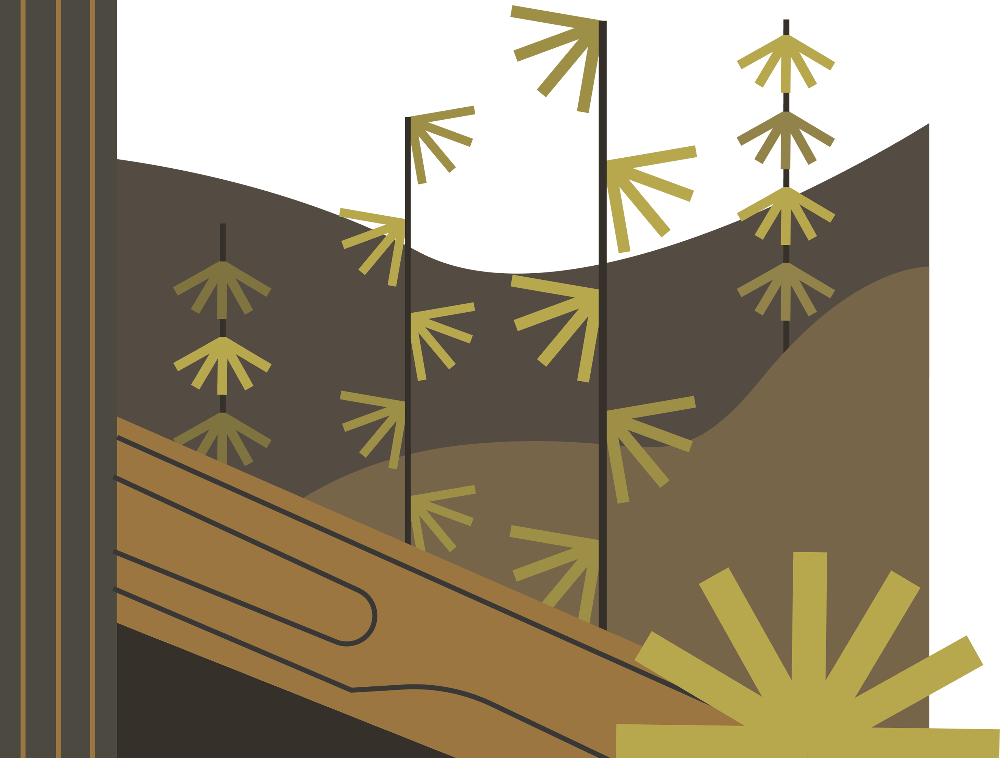
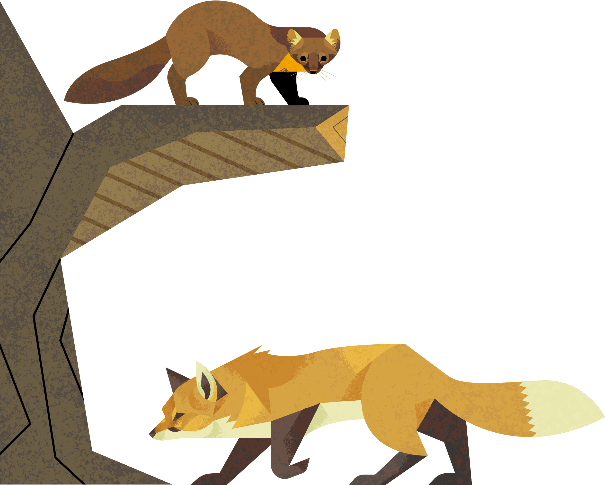

The European Pine Marten (Martes Martes), or just Pine Marten, is the most well known and widespread marten species. Described as cunning and agile, the European Pine Marten has quickly become a cornerstone of European ecology.
The general appearance of the Pine Marten is similar to its North American counterparts. Pine Martens can reach up to 80 cm (31.5 in), with their tail being a third of said length. Their fur is dark brown with its signature yellow bib, and the length of the fur changes depending on the season, growing thicker in the winter, and shorter in the summer. The European Pine Marten is particularly skilled in tree climbing, using their long claws and fur between their paws to grip tree trunks and branches. They have been observed to twist while falling, like cats, landing on their paws when tree climbing.
European Pine Martens also have a different face shape compared to its North American cousins across the Atlantic. It has a distinctively triangular face, with slimmer chhecks and shorter fur as well as its longer and darker snout. Its head is also shorter, with more pronounced ears jutting to the side.
European Pine Martens are mostly found in the UK, Scotland, more specifically. Although, they can also be spotted all the way from Western Europe to Norther Scandinavia and West Asia. Highly elusive, and secretive, the European Pine Marten is rarely spotted by visitors, their presence known mostly known through trackings and droppings. Pine Martens occupy mostly woodlands, but can be found on hills. Though, they prefer covered trees to avoid predation from Eurasian lynxes, bears, wolverines, and birds of prey.
While classified as a carnivore, the European Pine Marten is known for including plants, such as berries, into their diet. Hunting small mammals and birds, as well as feeding on carrion, Pine Martens are opportunistic hunters and scavengers. They have even become a slight nuisance for poultry farms, using their agility to break into gardens and pens to hunt and steal domestic fowl and produce.
Once brough to the UK from its native home in North America, Eastern Gray Squirrels used to populate estates, but quickly escaped and began to invade neighboring ecosystems. Hoarding resources from the native Red Squirrels and spreading foreign diseases, the Eastern Gray Squirrel has quickly become an ecological threat for UK wildlife. However, unlike the Red Squirrel, which has evolved side by side with the Pine Marten, Gray Squirrels haven't adapted to the Pine Marten's hunting strategies. Gray Squirrels have become a bigger target for the Pine Marten due to its inexperience, allowing Red Squirrels to recover their populations and lose their competition.